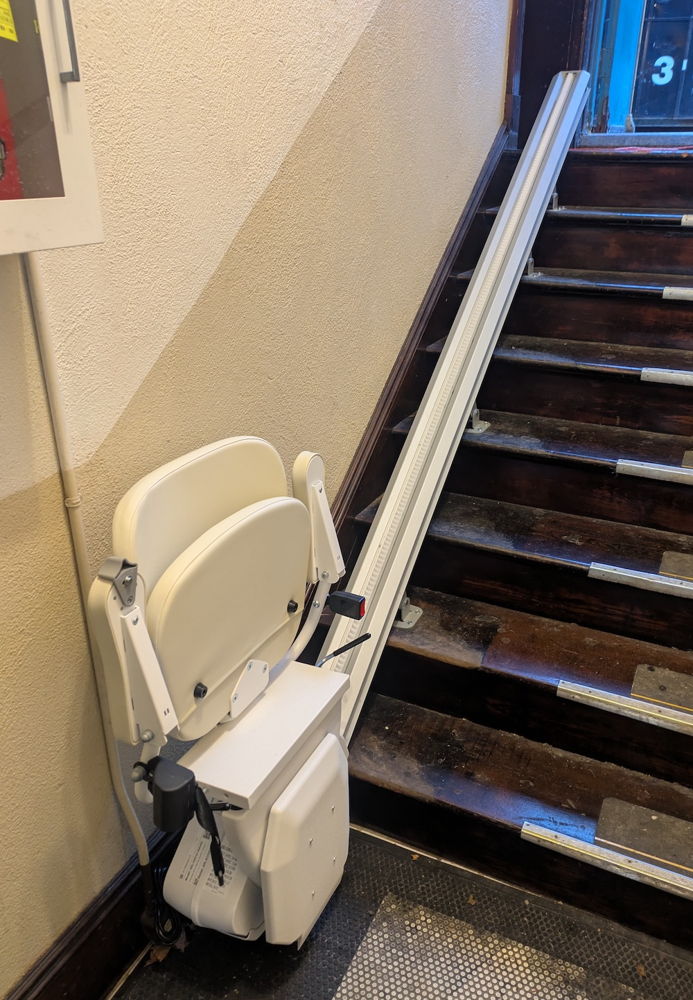
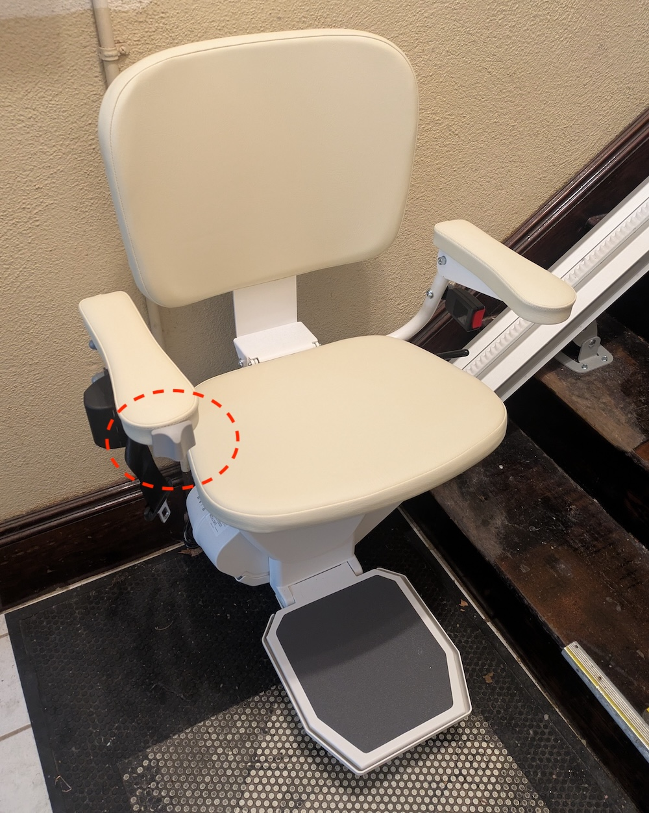
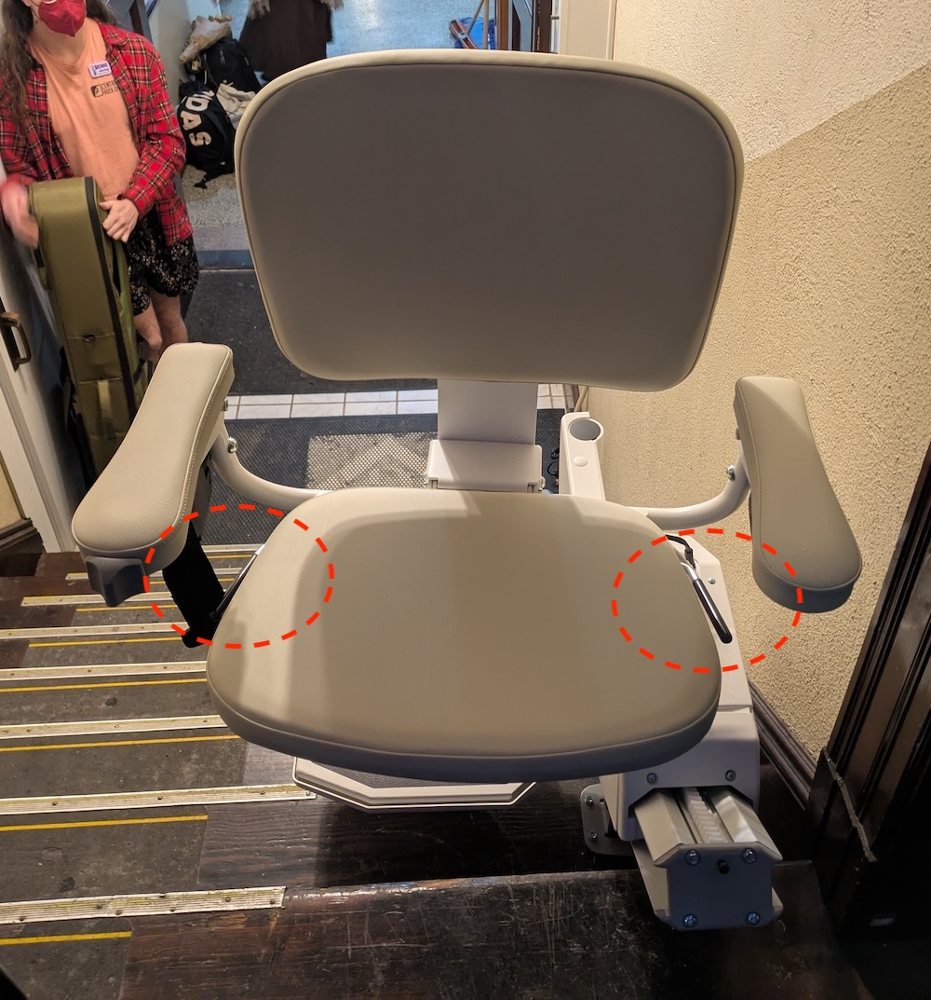

Accessibility
Airborne Infections
As of 2025-11-01:We host both mask-required and mask-optional dances. The policy for each dance will be announced in advance on the website, email list, and social media.
At mask-required dances, everyone age two and up must wear a high-filtration (N95, KN95, KF94, etc) mask, except when (a) actively drinking or (b) performing on stage.
We will provide high-filtration masks at the door for all dances.
Family dances and potlucks are always mask-optional.
Most other pre-dance events will follow the same masking policy as the regular dance they precede. Exceptions and other special events will have their own policies which will be announced in advance.
Please notify us after if you learn you may have been infectious at the dance. Without giving your name we’ll let the community know by posting on the website and emailing our covid notification list.
We recommend that dancers stay up to date with covid and flu vaccines, but we do not require them.
We use far UVC to clean the air at all of our dances.
We use glycol vapors to clean the air at our mask-required dances.
Mobility
Cambridge Masonic Hall
The Masonic Hall is not wheelchair accessible, but there is a seated stair lift down from the side door. To reach a volunteer who can let you in and operate the lift, please call the number written on our sign outside, or 617-871-0237 (Jeff) if you can't find that.
The seat, footrest, and armrests fold down:

The lift is operated by a little grey knob on the right arm rest, which you push in the direction you'd like it to move.
At the top it can be rotated towards the entrance by pulling the black levers upwards on either side of the seat:

To get in the front entrance, there are nine stairs up to the door and then sixteen down to the hall where the dance is.
The stage is on a higher level from the dancing, four steps up from the hall and four steps down from the side door.
There are two small all-gender bathrooms, not really practical for wheelchairs, on the same level as the dancing.
Somerville Armory
The Somerville Armory is wheelchair accessible. There is a ramp from street level to the door, and then everything we use is on a single level. This includes two large all-gender bathrooms, which each have a handicap stall.Lighting
Regular Dances
At our regular Sunday dances at the Masonic Hall there is a disco ball. We typically reduce light levels and turn on the ball about halfway through the evening, during one of the dances. If you want to know when this will be, ask at the door to talk to the hall manager.Spark in the Dark
At our occasional Spark in the Dark dances we have much lower light levels, moving colored lights, and blacklights. We don't use strobes or smoke machines.Public Transit
The Masonic Hall is on the Red Line, Fitchburg Line, and the 77, 83, 87, and 96 buses. The Armory is on the 88 and 90 buses. All of these buses and trains are wheelchair accessible. For detailed directions and schedules Google Maps works well: Cambridge Masonic Hall, Somerville Armory.Seating
All of our dances have chairs along the edge where you can sit, talk, hang out, etc if you don't feel like dancing.Allergies
Our family and double dances generally have potlucks. We don't have restrictions on what people can bring, and this often includes nuts and other common allergens.Fragrances
We don't have a fragrance policy, and some people (disproportionately newer dancers) wear cologne/perfume.Photography
We don't have a photography policy, and it is common for dancers to take pictures or videos and post them on social media.Financial
All our dances are sliding scale, on a pay what you can basis. If you can't afford to pay at least our minimum, let us know in advance and we're happy to have volunteers. You can join our volunteer mailing list to get notified when we're looking for people for upcoming dances.If you show up asking to volunteer without talking to us in advance we may be able to find a role for you, but we also may not. So please write to us ahead of time so we can coordinate!